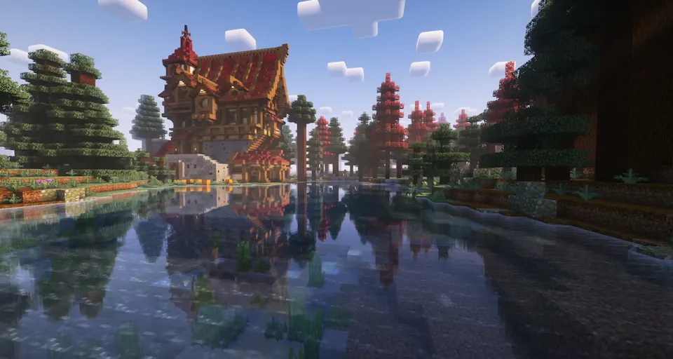

Nowy Generator Świata
Eksploruj świat wzbogacony o nowe biomy, wyjątkowe struktury i nieznane gatunki roślin. Podczas wędrówek natrafisz na unikalne lokacje, cenne zasoby oraz elementy rozgrywki, które sprawiają, że odkrywanie świata pozostaje ciekawe nawet po wielu godzinach gry. Świat zamieszkują również nowe moby, które urozmaicają eksplorację i stawiają przed graczami dodatkowe wyzwania.